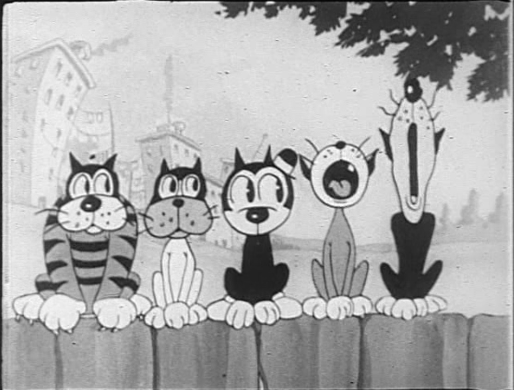

About Felix
Felix the Cat is a funny-animal cartoon character created in the silent film era. The anthropomorphic black cat with his black body, white eyes, and giant grin, coupled with the surrealism of the situations in which his cartoons place him, combine to make Felix one of the most recognized cartoon characters in film history. Felix was the first character from animation to attain a level of popularity sufficient to draw movie audiences.
Felix and His Friends
Characteristics
- Felix is a very creative problem solver
- He has the power to use his ears as scissors
- He can also use his tail as a clarinet and a baseball bat
Felix's Friends
Felix encounters many friends in his search for a good meal. His best friend is his girlfriend, Kitty Kat. Click on the links below to read more about them: